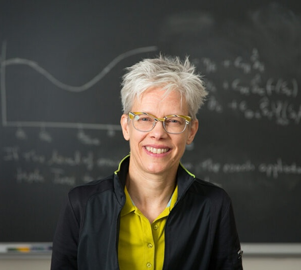

Plenary Speakers

Abstract
[Abstract of the talk.]
Bio
[Short biography of the speaker.]

Susan Murphy
“Reinforcement Learning for Digital Health Interventions in the Dyadic Setting”
Harvard University
Website →
View abstract & bio
Hide details

Susan Murphy
“Reinforcement Learning for Digital Health Interventions in the Dyadic Setting”
Harvard University
Website → View abstract & bio Hide detailsAbstract
We present our ongoing work on the development of an online reinforcement learning (RL) algorithm for dyadic digital intervention settings in which the task for the RL algorithm is to assist the target person, with a difficult illness, remain adherent to needed behavioral activities. To achieve this goal the RL algorithm will not only deliver digital interventions to the target person but also deliver interventions to assist the carepartner to manage caregiving burden and help the two individuals improve their relationship. That is, different RL components target different elements of the dyad. The RL algorithm is a multi-agent RL algorithm in which the 3 agents make decisions on the 3 elements of the dyad. We incorporate domain knowledge in the form of approximal causal directed acyclic graphs to speed up online learning in this sparse data setting. This work is motivated by our development of the ADAPTS-HCT multi-agent RL algorithm, designed to improve medication adherence by young adults who have undergone a blood and bone marrow transplant. The RL algorithm is currently being deployed in a trial.
Bio
Susan A. Murphy is Mallinckrodt Professor of Statistics and of Computer Science and Associate Faculty at the Kempner Institute, Harvard University. Her research focuses on improving sequential decision making via the development of online, real-time reinforcement learning algorithms. Her lab is involved in multiple deployments of these algorithms in digital health. She is a member of the US National Academy of Sciences and of the US National Academy of Medicine. In 2013 she was awarded a MacArthur Fellowship for her work on experimental designs to inform sequential decision making. She is a Fellow of the College on Problems in Drug Dependence, Past-President of Institute of Mathematical Statistics, Past-President of the Bernoulli Society and a former editor of the Annals of Statistics.
Banquet Speaker

Sudipto Banerjee
“Carbs, Calories, and Computation: Serving Up Statistical Inference in the AI Ecosystem”
University of California, Los Angeles
Website →
View abstract & bio
Hide details
Sudipto Banerjee
“Carbs, Calories, and Computation: Serving Up Statistical Inference in the AI Ecosystem”
University of California, Los Angeles
Website → View abstract & bio Hide detailsAbstract
Tonight, I will share my perspectives on the profound paradigm shift currently taking place in data analysis, driven by the rapid growth of artificial intelligence technologies. At a time when many in the statistical community are, perhaps understandably, feeling somewhat insecure about the future of our discipline, I will argue that the evolution of AI actually offers an expansive intellectual frontier. Rather than displacing us, statistical methods will not merely co-exist with machine learning and computer science, but will serve as the crucial engine driving probabilistic inference at unprecedented scales. To illustrate this, I will elucidate a basket of ideas that synthesize into an artificially intelligent inferential system. The first two—amortized inference for training generative AI frameworks on complex data, and transfer learning for scaling inference to massive datasets—operate as two sides of the same coin: achieving unparalleled computational efficiency through memory. The third idea, predictive stacking, builds upon this foundation to deliver exact, simulation-based inference without resorting to expensive iterative methods. Finally, I will bring these synthesized concepts to life through a real-time case study in spatial energetics. Drawing on streaming mobile health data from wearable devices in the UCLA PASTA-LA project, I will demonstrate how these methods unlock real-time insights into a subject’s metabolic levels as a function of their mobility, ultimately showing how the synergy of Statistics and AI drives tangible public health innovations.
Bio
Sudipto Banerjee, Ph.D., is a Professor in the Department of Biostatistics and the Department of Statistics & Data Science at the University of California, Los Angeles (UCLA). He currently serves as the Senior Associate Dean at the UCLA Fielding School of Public Health and holds an affiliate appointment in the UCLA Institute of the Environment and Sustainability. Prior to his current leadership role, he served as the Chair of the UCLA Department of Biostatistics from 2014 through 2023. Dr. Banerjee is a globally recognized leader in spatial statistics and Bayesian modeling. His pioneering research focuses on developing statistical machine learning methods and Bayesian inference for complex systems involving massive datasets (“BIG DATA”). His methodologies are widely utilized in spatial data science, spatial epidemiology, and to analyze how environmental processes impact public health. A prominent voice in the statistical community, Dr. Banerjee served as the President of the International Society for Bayesian Analysis (ISBA) in 2022. His extensive scholarly contributions have earned him numerous prestigious honors, including the Mortimer Spiegelman Award from the American Public Health Association, the George W. Snedecor Award from the Committee of Presidents of Statistical Societies (COPSS), and the Jerome Sacks Award for Outstanding Cross-Disciplinary Research from the National Institute of Statistical Sciences (NISS). Dr. Banerjee is an elected Fellow of the American Statistical Association (ASA), the Institute of Mathematical Statistics (IMS), ISBA, and the American Association for the Advancement of Science (AAAS).